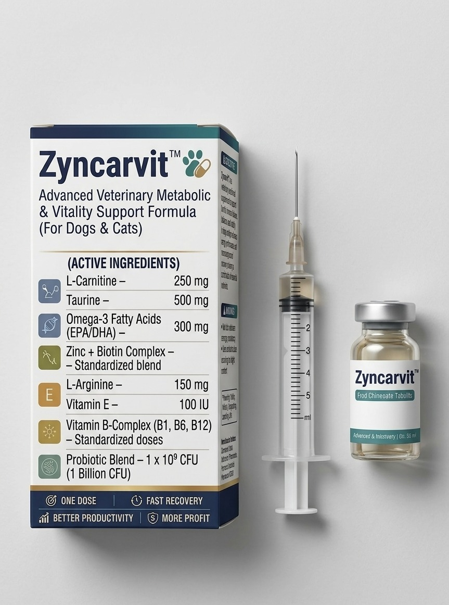

Loading Excellence...
Revolutionary pharmaceutical-grade metabolic and vitality support formula Engineered dd for optimal health in dogs and cats. Combining cutting-edge nutritional science with premium bioavailable ingredients to power cellular energy, enhance metabolic function, and support comprehensive wellness across all life stages.

Zyncarvit™ represents a paradigm shift in veterinary nutritional supplementation, offering a comprehensive, scientifically-validated approach to metabolic health and vitality enhancement in companion animals. This advanced formulation addresses the multifaceted needs of modern pets facing environmental stressors, dietary imbalances, and age-related metabolic challenges.
Leverages a synergistic blend of B-complex vitamins, CoQ10, and L-Carnitine to enhance mitochondrial function and ATP production. This metabolic optimization supports sustained energy levels, improved exercise tolerance, and enhanced recovery capacity in both dogs and cats, addressing fatigue and lethargy at the cellular level.
Incorporates pharmaceutical-grade antioxidants including Vitamin E, Vitamin C, and selenium to neutralize free radicals and combat oxidative stress. This comprehensive antioxidant matrix protects cellular membranes, supports immune function, and promotes healthy aging by reducing inflammation and preventing degenerative processes.
Formulated with essential minerals (zinc, magnesium, selenium) and amino acids (taurine, methionine) that serve as cofactors in hundreds of enzymatic reactions. This targeted nutritional support optimizes carbohydrate, protein, and lipid metabolism, ensuring efficient nutrient utilization and metabolic homeostasis.
Provides targeted nutritional support for critical organ systems including cardiovascular, hepatic, renal, and neurological health. The inclusion of taurine supports cardiac function in cats, while antioxidants protect against oxidative damage in the liver and kidneys, promoting long-term organ vitality and function.
Developed through rigorous research and clinical validation, Zyncarvit™ delivers ingredients in optimal ratios and highly bioavailable forms. Each component is carefully selected for maximum absorption and efficacy, ensuring that pets receive therapeutic levels of nutrients that actually reach target tissues and produce measurable health outcomes.
Manufactured in FDA-registered, GMP-certified facilities using pharmaceutical-grade ingredients. Every batch undergoes rigorous quality control testing for purity, potency, and safety. Third-party verification ensures that Zyncarvit™ meets the highest standards of veterinary pharmaceutical excellence and delivers consistent, reliable results.
Each ingredient in Zyncarvit™ is meticulously selected based on clinical evidence and formulated for optimal bioavailability, ensuring maximum therapeutic efficacy and safety.
25 mg
Essential cofactor in carbohydrate metabolism and neurological function. Supports energy production and nervous system health.
20 mg
Critical for cellular energy production and antioxidant defense. Supports healthy skin, coat, and eye function.
30 mg
Key player in DNA repair and cellular energy metabolism. Supports cardiovascular health and cognitive function.
15 mg
Essential for amino acid metabolism and neurotransmitter synthesis. Supports immune function and hemoglobin production.
200 mcg
Crucial for red blood cell formation and neurological function. Supports energy metabolism and DNA synthesis.
400 IU
Powerful lipid-soluble antioxidant protecting cell membranes. Supports immune function and cardiovascular health.
100 mg
Water-soluble antioxidant supporting collagen synthesis. Enhances immune response and stress resilience.
50 mg
Essential mineral for immune function and wound healing. Supports skin health, reproduction, and protein synthesis.
100 mg
Critical cofactor in over 300 enzymatic reactions. Supports muscle function, bone health, and energy metabolism.
100 mcg
Powerful antioxidant and thyroid function regulator. Supports immune system and cellular protection.
50 mg
Essential for mitochondrial energy production. Supports cardiac function and provides antioxidant protection.
250 mg
Facilitates fatty acid transport into mitochondria. Supports energy production and healthy weight management.
500 mg
Essential amino acid for feline health. Supports cardiac function, vision, reproduction, and immune system.
200 mg
Essential sulfur-containing amino acid. Supports liver detoxification, urinary health, and protein synthesis.
300 mg
Anti-inflammatory essential fatty acids. Support cardiovascular, cognitive, joint, and skin health.
Zyncarvit™ operates through multiple synergistic pathways to optimize metabolic function and enhance vitality at the cellular, tissue, and systemic levels.
B-complex vitamins, CoQ10, and L-Carnitine work synergistically to optimize mitochondrial function. B vitamins serve as essential cofactors in the citric acid cycle and electron transport chain, while CoQ10 facilitates electron transfer in ATP synthesis. L-Carnitine shuttles long-chain fatty acids into mitochondria for beta-oxidation, ensuring efficient energy production from multiple fuel sources and supporting sustained cellular vitality.
Vitamins E and C, selenium, and CoQ10 establish a comprehensive antioxidant defense system. Vitamin E protects lipid membranes from peroxidation, while Vitamin C regenerates oxidized Vitamin E and neutralizes water-soluble free radicals. Selenium serves as a cofactor for glutathione peroxidase, and CoQ10 provides additional antioxidant protection, collectively reducing oxidative stress and preventing cellular damage throughout the body.
Essential minerals (zinc, magnesium, selenium) and amino acids (taurine, methionine) function as critical cofactors in enzymatic reactions governing carbohydrate, protein, and lipid metabolism. Zinc supports over 300 enzymes, magnesium activates ATP and supports glucose metabolism, while selenium regulates thyroid hormone metabolism. This comprehensive support ensures optimal nutrient utilization and metabolic efficiency across all physiological systems.
Taurine, CoQ10, and omega-3 fatty acids provide targeted cardiovascular support. Taurine regulates calcium homeostasis in cardiac myocytes and supports contractility, particularly critical in feline patients. CoQ10 enhances myocardial energy production, while EPA/DHA reduce inflammation and support vascular health. This multi-modal approach promotes cardiac function, reduces oxidative damage, and supports healthy blood pressure regulation.
Vitamins C, E, B6, zinc, and selenium collectively support immune function through multiple mechanisms. Vitamin C enhances phagocyte function and antibody production, while Vitamin E protects immune cell membranes. Zinc is essential for T-cell development and function, B6 supports lymphocyte proliferation, and selenium enhances natural killer cell activity. This comprehensive immune support enhances disease resistance and promotes optimal immune response.
Methionine, selenium, and B-vitamins support hepatic detoxification pathways and cellular protection mechanisms. Methionine provides sulfur for glutathione synthesis and supports Phase II detoxification, while selenium serves as a cofactor for glutathione peroxidase. B-vitamins support methylation reactions critical for detoxification and DNA repair, collectively enhancing the body's ability to eliminate toxins and protect against environmental stressors.
Zyncarvit™ is indicated for a comprehensive range of metabolic and vitality support applications in companion animals.
Addresses lethargy, fatigue, and reduced activity levels in pets of all ages
Supports healthy aging and maintains quality of life in senior dogs and cats
Enhances athletic performance and accelerates recovery in working and sporting animals
Aids recovery following illness, surgery, or periods of physiological stress
Supports healthy metabolism and weight maintenance through optimized fat utilization
Provides nutritional support for optimal cardiac function and vascular health
Supports neurological health and cognitive function in aging pets
Enhances natural immune defenses and disease resistance capacity
A comprehensive strategic framework positioning Zyncarvit™ as the premium choice in veterinary metabolic support.
Premium pharmaceutical-grade formulation delivering comprehensive metabolic and vitality support for companion animals.
Premium positioning reflecting superior quality, efficacy, and comprehensive formulation with competitive value proposition.
Strategic multi-channel distribution ensuring accessibility through trusted veterinary and premium retail channels.
Integrated marketing communications emphasizing scientific validation, veterinary endorsement, and superior outcomes.
Estimated performance indicators reflecting market potential, user satisfaction, and expected adoption of Zyncarvit™.
Estimated percentage of veterinarians likely to adopt and recommend the product
Projected pet owner satisfaction based on expected improvements in vitality and health
Estimated likelihood of continued use after initial treatment period
Expected ease of administration and adherence to injectable treatment protocols
Estimated annual growth based on market demand and positioning
Planned veterinary clinics targeted for initial distribution phase
Zyncarvit™ is strategically positioned as the premium, science-backed metabolic support solution in the veterinary supplement market. Unlike generic multi-vitamins or single-ingredient supplements, Zyncarvit™ delivers a comprehensive, synergistic formulation specifically Engineered dd for optimal metabolic function and vitality enhancement in companion animals.
Our competitive advantage lies in pharmaceutical-grade quality, clinical validation, and a holistic approach that addresses multiple physiological systems simultaneously. By combining the latest nutritional science with rigorous manufacturing standards, Zyncarvit™ sets a new benchmark for efficacy, safety, and professional confidence in veterinary supplementation.
The brand appeals to discerning pet owners who prioritize their animal's health and longevity, as well as veterinary professionals seeking evidence-based nutritional solutions they can confidently recommend. Zyncarvit™ represents the intersection of cutting-edge science, clinical excellence, and unwavering commitment to companion animal wellbeing.
| Parameter | Specification |
|---|---|
| Dosage Form | Sterile Injectable Solution |
| Administration | Injection (IM or SC), once daily or as directed by veterinarian |
| Dosage (Dogs) | 1 mL per 10 kg body weight daily |
| Dosage (Cats) | 0.5 mL per 5 kg body weight daily or as directed by veterinarian |
| Storage | Store in a cool, dry place below 25°C |
| Shelf Life | 24 months from date of manufacture |
| Package Sizes | Multi-dose vials |
| Contraindications | Known hypersensitivity to any ingredient |
| Safety | Wide margin of safety; no known adverse effects at recommended doses |
| Drug Interactions | Consult veterinarian if pet is on medication |
| Quality Certification | Manufactured in GMP-certified facilities following international quality standards |
| Testing | Third-party verified for purity and potency |